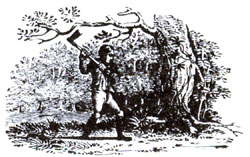

The Endangered Species Act is the most important law in the world if you happen to be a condor, say, or a Florida panther.
The statute protects rare animals, birds, and plants-from hunters, in some cases, but more often from developers who would so alter habitat that it can no longer support the species. For that reason, it's also very controversial: Every time the law comes up for renewal, it's opposed by powerful interests who don't want some little fish or flower to stand in the way of a new mine, highway, dam, or string of condos.
Their principal weapon is ridicule. A few years ago, the star of the drama was a tiny fish known as the snail darter. Its rarity delayed the construction of the Tellico Dam on the Little Tennessee River-a dam that should never have been built, snail darter or no snail darter. But the fish got the blame. Before that, a flower called the furbish lousewort held up the building of a dam in Maine.
This year, Senator Lloyd Bentsen is picking on the Concho water snake, which, if officially "listed" by the Fish and Wildlife Service, could hinder the building of the Stacey Dam and Reservoir in the senator's home state of Texas. Construction of the dam and reservoir would probably lead to the snake's extinction, because the rest of its habitat has already been ruined by dams and reservoirs. Nonetheless, Senator Bentsen is holding renewal of the Endangered Species Act hostage at the behest of those pushing for the Stacey project.
Much has been made of the civil-rights record of William Rehnquist, the new chief justice of the United States, but his environmental record hasn't been examined in much detail. To those who dream of a Supreme Court sensitive to environmental concerns, the prospects aren't pretty.
I recently interviewed 18 leading environmental lawyers and legal scholars around the country for a long piece on environmental law. Among the questions I asked was, "Which legal decision has been most damaging-most difficult to live with in the practice of environmental law?"
The most common answer was, "Vermont Yankee." The author of that opinion was the Honorable Justice William Rehnquist.
The impact of Vermont Yankee is hard to overstate. At the time-the mid '70s-the courts were busy interpreting the National Environmental Policy Act of 1970. NEPA requires federal agencies to study the environmental effects of a proposed project and to examine alternatives to it.
In the early '70s, the Vermont Yankee Power Company wanted permission to build two big nuclear reactors to supply electricity to its customers. The Natural Resources Defense Council filed suit, claiming that Vermont Yankee had submitted insufficient documentation to the Nuclear Regulatory Commission to support its license request: The documents failed to examine the environmental effects of the entire fuel cycle (uranium mining, fuel fabrication, plant operation, and waste disposal), and they didn't consider energy conservation as a possible alternative to building the plants in the first place.
The court of appeals agreed, ruling that the Nuclear Regulatory Commission must examine the fuel cycle and investigate energy conservation as an alternative. It implied, as well, that the NRC should choose conservation if it proved to be superior.
This was an expansive reading of NEPA, and, had it stood the test of the high court, the practice of environmental law would be much different today.
But it wasn't to be. The Court, led by our new chief justice, slapped down the court of appeals, ruling that it had overstepped itself considerably. Agencies, the Court said, have no power to do more than the absolute minimum Congress spelled out in NEPA. They must investigate alternatives, but they are under no obligation to choose one over another, despite its benefits. In consequence, NEPA is a procedural statute only-useful for delaying and improving projects but powerless to stop bad projects altogether or to force agencies to make the most environmentally benign choice.
Later, in a famous death penalty case with important environmental implications, Justice Rehnquist wrote that in most cases an agency can't be sued successfully for not doing something it has the power to do under its rules and regulations. This hamstrings outsiders from forcing recalcitrant agencies to do their jobs as well as possible.
So here we have a chief justice who has ruled again and again that agency decisions shall stand-an odd position for a judge appointed by a president who has been rather scornful of the federal bureaucracy in his day.
The Forest Service announced its long-range plans for our national forests in September, and environmentalists let out a cry of shock. The Service intends to double the amount of timber cut annually and to build an incredible 580,000 miles of new roads by 2030. By comparison, 343,000 miles of roads now crisscross the national forests. (The entire interstate highway system comprises just 40,000 miles!) Environmentalists tried to apply Gramm-Rudman to the Forest Service's road-building budget in Congress but were outmaneuvered by western senators.
Finally, we alert you to an extraordinary encyclopedia of information on the international environment. It's the first in what is projected to be an annual series of such reports, and it's packed with charts, graphs, and numbers, numbers, numbers. There are essays on such topics as world population, human settlements, food and agriculture, forests and rangelands, wildlife and habitat. But the heart of the report is its data, which make it an enormously useful tool for research and understanding. (World Resources 1986, by World Resources Institute and International Institute for Environment and Development, edited by Donald Hinrichsen, Basic Books, 1986, $16.95.)
Tom Turner, a writer and editor who's worked in the environmental field for 17 years, is with the Sierra Club Legal Defense Fund, an independent environmental law firm that represents many organizations across the country. It is supported principally by private donations. For more information, write Sierra Club Legal Defense Fund, 2044 Fillmore St., San Francisco, CA 94115.
|
 |
|
|